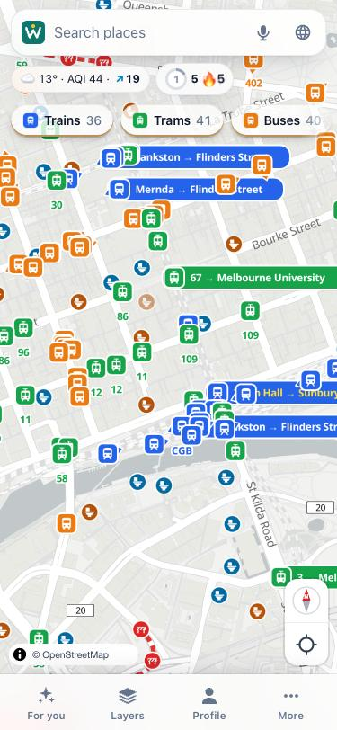

Everything Wayaroo does.
Where's my tram? Where's the cheapest fuel? Where is the space station right now? One free map answers all of it.
Wayaroo started as a map of live buses, trains and trams. It now does a lot more than getting you from A to B: it finds the cheapest fuel, warns you of the school zone, shows your family on a private map, follows the space station overhead and flies you out past the planets.
This page lists all of it: more than 50 layers and features. Everything here is free, needs no account, and works in the app and in your browser. Where a feature works only in some places, it says so.
Jump to: Get around · Drive · Stay safe · Every day · Family and friends · Explore · For you

Melbourne's city centre on the live map. Map data © OpenStreetMap contributors.
Get around without a car
Live buses, trains, trams and ferries
Every vehicle moving on the map, with how late it is, its next stops, and whether it's usually late or full at this time. Melbourne and Victoria, Sydney and New South Wales, Brisbane, the Gold Coast, Adelaide, Canberra and Cairns, and about 390 operators in 13 other countries.
Plan the trip, with the fare
Train, tram and bus trips in Victoria and New South Wales beside the car, bike and walking options, with the Myki fare in Melbourne, an Opal estimate in Sydney, a check of every connection and a step-free option.
Nearest stops, next departures
Open For you and the closest stops are at the top, with the next departures at each and how many minutes away they are.
Rewind the last 30 minutes
Drag the slider back and see where every bus, train and tram was. Handy when you want to know where your bus went.
Your stop, in your language
Wayaroo announces the next stop in your language. If you can't follow the driver, a card asks them in English to tell you when you're there.
My child's bus
Where the operator's live feed marks school routes, as in New South Wales, save your child's bus and see where it is on the way to school.
Ferries, live
Sydney's ferries moving across the harbour, with the next departures at your wharf. Ferries in other cities too, where the operator shares them.
Bike and scooter share
Bikes, e-bikes and free docks, live, in cities whose share systems publish open data, such as New York.
Drive
Directions that look after you
Turn-by-turn by car, bike or on foot, with lane arrows, exit signs, speed humps, level crossings, crash hotspots and a warning when the low sun will be in your eyes.
The speed limit, and when it changes
The limit for the road you're on. A school zone's 40 shows only in school hours on school days. Official speed zones in Victoria, OpenStreetMap elsewhere, and two taps to tell us if one is wrong.
Cameras, closures and roadworks
Fixed speed and red-light cameras, road closures, crashes and planned roadworks drawn on the road. Official data in Victoria. Camera alerts are not shown in countries where they are illegal.
Freeway signs, live
The electronic lane and speed signs over Melbourne's freeways, as they read right now.
How long is this red light?
Stopped at a light, Wayaroo can say about how much longer it will be: an estimate from earlier waits of Wayaroo drivers at that light.
Fuel prices and when to fill up
The official price of every station in New South Wales, Tasmania, Western Australia and Victoria (Victoria's are at least 24 hours old), prices from drivers everywhere, whether the drive is worth it, and a notice when your fuel drops to the price you set.
EV chargers
Power, plug types and the number of charging points, a filter for fast chargers and your car's plug, and chargers along your route.
Parking
Street bays in Melbourne's CBD, free or taken, with the sign's rule right now. Park&Ride spaces in New South Wales. Car parks anywhere, a parking timer, and a pin to find your car again.
Caravan, truck or tall vehicle
Type your height, length and mass once. Wayaroo checks the route for low bridges and weight and length limits in Australia and New Zealand.
Tolls and taxis
Melbourne's toll prices for your trip before you leave, and about what a taxi from the rank would cost in Victoria.
On your car's screen
Apple CarPlay in the iPhone app: the map, search, nearby places, voice directions and one-tap road reports.
Your drives, kept on your phone
A record of your trips with the fuel they cost and a safe-driving score. Nothing leaves your phone.
Stay safe
Emergency warnings
Official warnings and incidents in Victoria, New South Wales, the ACT and Queensland, each with its source and the time it was updated, and world disaster alerts elsewhere. For warnings, the agencies' own channels come first.
Emergency help
One button for the right emergency number where you are, your address or plus code to read out, and the nearest defibrillator and hospital.
Fires and earthquakes
Heat spots that NASA's satellites saw in the last 24 hours (they are not official fire warnings) and the past week's earthquakes around the world.
Thunderstorm asthma
In Victoria's grass pollen season, October to December, the official thunderstorm asthma risk for your district, with a link to the official pollen count.
Reports from other drivers
Potholes, crashes, flooding, fallen trees and more, reported in two taps and confirmed by the next driver. Tell us about a wrong fuel price or a mistake on the map the same way.
Hospitals and defibrillators
Hospitals, emergency services and public defibrillators on the map when you need to find one fast.
Every day
Toilets, water and showers
Australia's public toilets with hours and accessibility, customer toilets in shops and servos, drinking water and bottle refill points, and public showers.
Weather on the map
Rain, wind and dust haze moving on the map, today's forecast and UV, modelled air quality anywhere in the world, and at a beach the water temperature and the waves.
About this place
Tap anywhere: what the place is, whether it's open now, the weather there, the departures nearby and a plus code to share.
Area profiles
Population, age, rent, income and languages for the Australian suburb you tap, from the ABS Census.
Road cameras
The latest picture from traffic cameras in New South Wales, London, Finland, British Columbia and Hong Kong.
Radio
The radio stations of the country you're in, on the map. Tap one to listen.
Family and friends
Family & friends map
A private group of up to 12 people, joined with a six-letter code or a link. Everyone who chooses to share shows on the others' maps. No account and no chat; pause or leave whenever you like. Positions are held for two hours at most and then forgotten.
Share my trip
One link that shows where you are and when you'll arrive, until you get there.
Share this bus, share this view
On a school bus with no live tracking, an adult on board can share where the bus is, so the other parents can follow it. Or send someone exactly the map you're looking at.
Explore the Earth and beyond
Satellites and space stations
The International Space Station, Tiangong and the brightest satellites moving live, the station's path ahead, and the Starlink satellites as a cloud of dots. Tap one for its height and speed.
Leave Earth
Fly out from your street to the Solar System: the Sun, the planets and the Moon where they really are today, spacecraft on their way, and asteroids passing Earth. Then on to the nearest stars, the Milky Way and the neighbouring galaxies. Speed up time, or fly to a planet.
Other worlds
Spin and zoom NASA's maps of the Moon, Mars, Mercury, Venus and eight more worlds, with the landing sites and where the Mars rovers are today.
Earth now, and Mars today
The whole sunlit Earth as a spacecraft 1.5 million kilometres away saw it, and the newest pictures from the rovers on Mars.
From space to your street
A one-minute flight from space down to exactly where you are.
Dive here
Over deep water, dive from the surface to the real depth of the sea floor, through the ocean's zones and the animals that live in each.
Aurora and tonight's sky
Tonight's aurora chance as a glow on the map, when it gets dark, how bright the Moon is, which planets are up, and the nearest dark place to watch from.
Live Earth
Volcanoes, storms, large fires and icebergs that NASA is tracking right now, each with a link to its source.
Flight view
On a plane with no signal? From the phone's GPS alone, Wayaroo shows your speed and height, the places below you and the time to landing.
The map, your way
A globe, satellite pictures, 3D hills, NASA's picture of today and a night look. In Melbourne and Sydney, 3D buildings with their real shadows.
For you
Record walks, runs and rides
Distance, pace, splits, best efforts and fitness from your phone's GPS, with a 3D replay. No account.
A budget that stays on your phone
Type what you spend or add a bank statement file. See your regular bills and what's left until payday.
Ask Wayaroo
Type or say what you need, such as "toilets near me" or "cheapest diesel", and Wayaroo shows it on the map.
For AI assistants
Wayaroo's connector lets an AI assistant find toilets, the cheapest fuel, the weather, places and public transport trips for you.
Points for helping
Report a hazard, and when other drivers confirm it you earn points and climb the leaderboard.
Your language
Twenty languages checked by people, and dozens more by machine translation, picked from the language list in Settings.
Good to know
- Wayaroo is a guide. Road signs, timetables at the stop and official warnings come first.
- Every data source is named and used under its licence. See the data credits.
- Some features need data that only some places publish. Each card above says where it works.
- CarPlay needs the iPhone app. The rest is on the same map in the apps and in your browser.
Free, no account, 20 languages. For iPhone, iPad and Android.